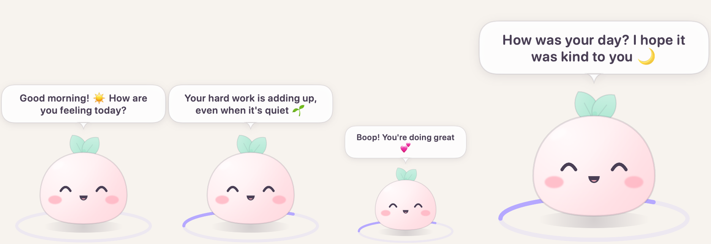
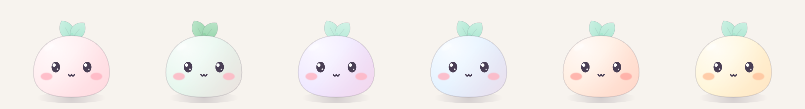
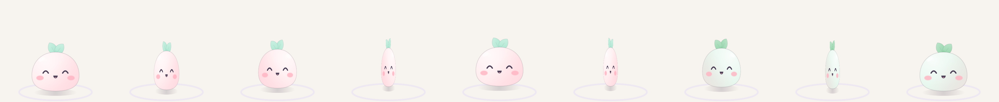
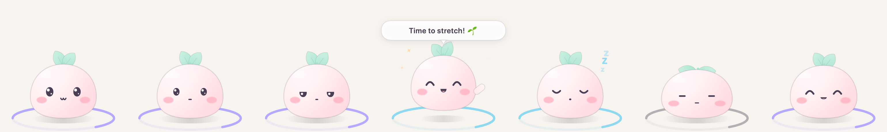

For macOS 14 Sonoma or newer
Mochi
A tiny friend that floats on your screen, says sweet things, and reminds you to rest your eyes and stretch.

What Mochi does
⏰ Break reminders
Gentle 20-20-20 eye breaks, Pomodoro, or your own timer. Mochi yawns when a break is near and bounces when it's time.
💬 Talks to you
Good morning hellos, check-ins, kind words and cute fun facts. Tap Mochi and it answers back.
🎨 Six flavors
Every couple of hours Mochi does a little spin and changes color: strawberry, matcha, taro, ramune, peach or banana.
🔋 Easy on battery
Calm animation uses about 1% CPU. Mochi stays quiet while you're away.
🔒 Private
No internet, no accounts, no tracking. Everything stays on your Mac.
🌙 Fits in
Light and dark mode, four sizes, Reduce Motion, and it never steals focus.
Pick a flavor


How to install
- Download the zip and double-click it to unzip.
- Drag Mochi into your Applications folder.
- Open Mochi. Your Mac will say it can't verify the developer. That's expected: Mochi is a free hobby app that isn't registered with Apple, which costs $99 a year. Click Done.
- Open System Settings → Privacy & Security, scroll down, and click Open Anyway next to Mochi. Confirm with your password.
- That's it! Look for 🌱 in your menu bar. You only need to do this once.
On macOS 14 Sonoma you can instead right-click Mochi, choose Open, then click Open again.
Check your download (optional)
Only download Mochi from this page. To make sure your file is the real one, open Terminal and run:
shasum -a 256 ~/Downloads/Mochi-0.1.0.zipIt should print exactly this fingerprint:
32c5275ad6855f53ddcb9aefbeb1c5c48a65ec7f5b483956e6fbe3666c3cf955If it's different, don't open the file.
Mochi's moods
